Raft · 核心原理图谱
共识算法库:嵌入宿主的复制状态机引擎,Leader 单写 → 多数派复制 → 各副本 FSM 收敛到同一序列,强一致 vs 可用性。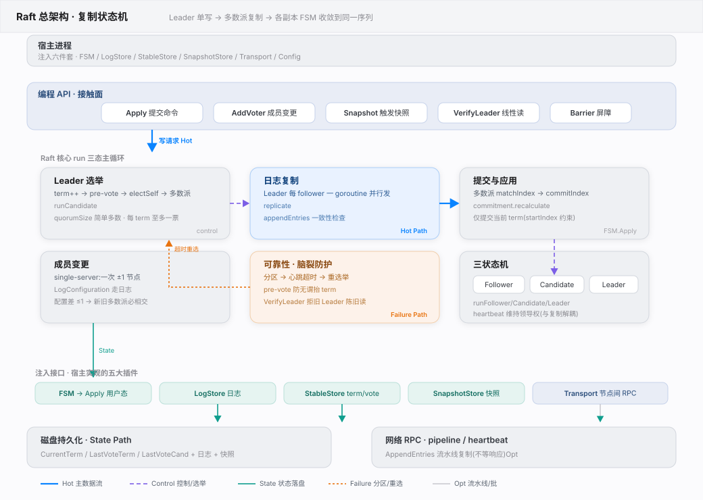
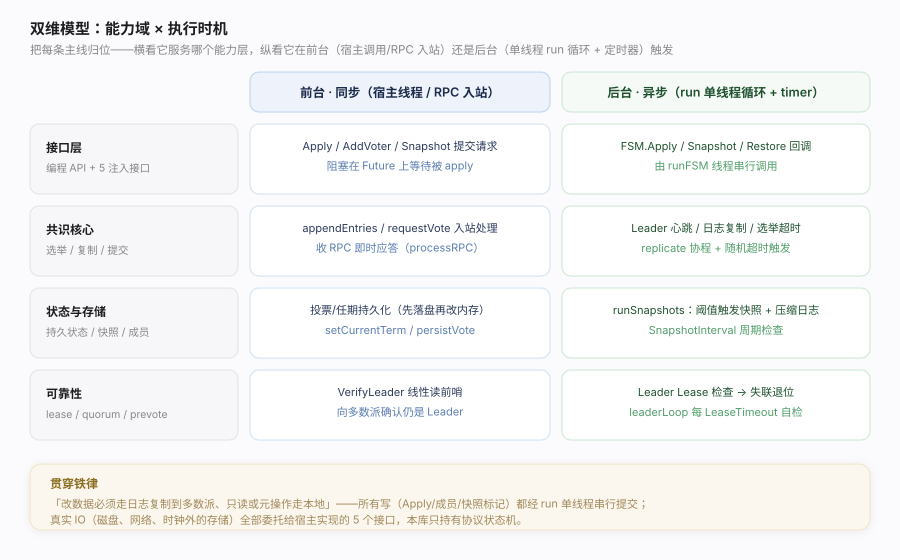
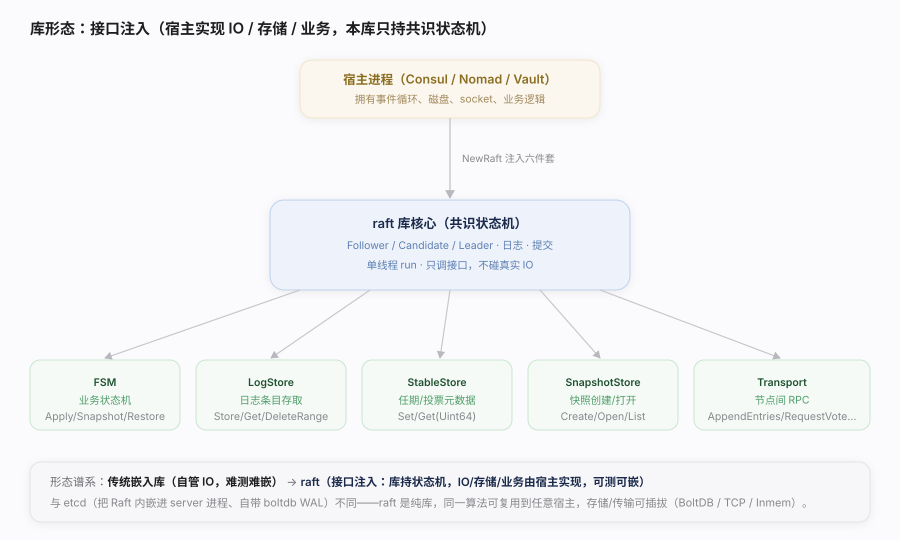
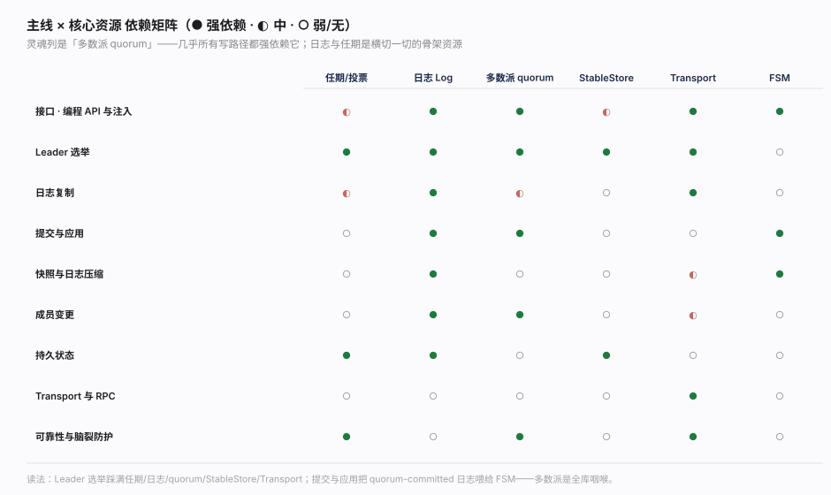
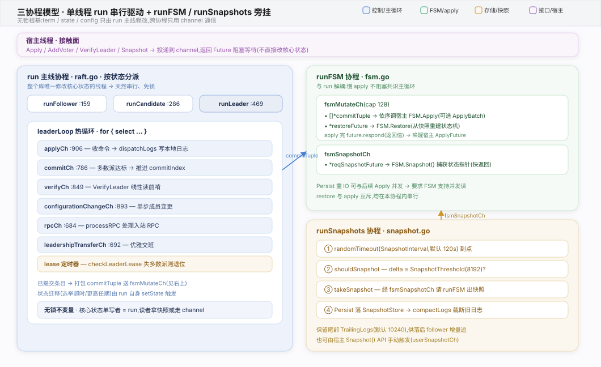
import 并注入接口。Apply 返回 Future，需 .Error/.Response 等待被提交并 apply 后才有结果。setCurrentTerm/persistVote 都是先写 StableStore 再改内存（raft.go setCurrentTerm 落盘失败直接 panic），否则宕机重启会违反“一任期一票”。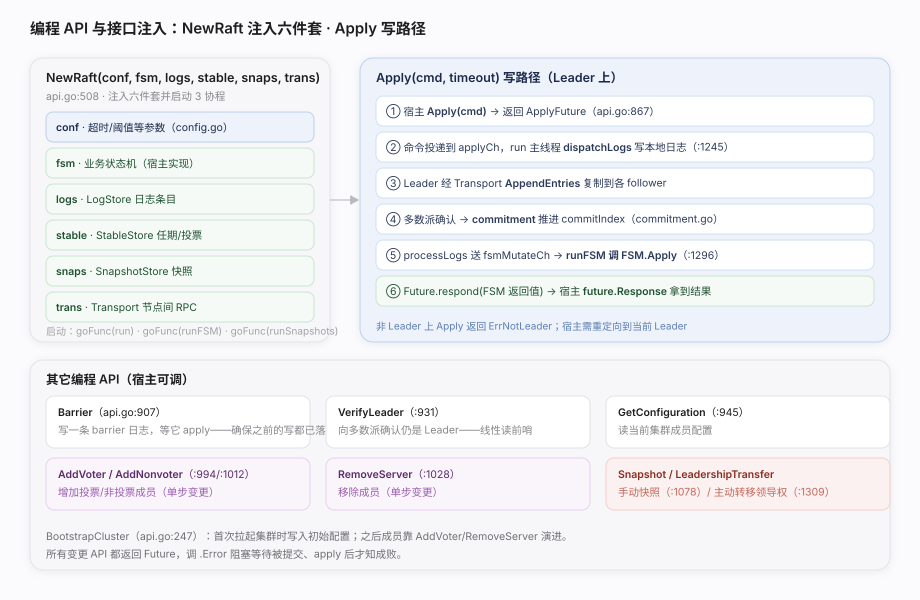
import 本库、用 NewRaft 注入六件套启动，再用 Apply/AddVoter/Snapshot/LeadershipTransfer 驱动共识。核实基准：api.go、fsm.go、log.go、stable.go、snapshot.go、transport.go。Apply 等返回 Future，务必 .Error/.Response，否则拿不到“已提交并 apply”的真实结果。raft-boltdb（可选开 MonotonicLogStore 优化）；测试用 InmemStore。ApplyBatch，一次拿一批已提交日志，减少 apply 开销。ErrNotLeader；宿主须把写重定向到当前 Leader（用 LeaderWithID 查）。FSMSnapshot.Persist。| 接口 | 谁实现 | 关键方法 | 源码 |
|---|---|---|---|
| FSM | 宿主业务 | Apply / Snapshot / Restore | fsm.go:16 |
| LogStore | raft-boltdb 等 | FirstIndex / GetLog / StoreLogs / DeleteRange | log.go:112 |
| StableStore | raft-boltdb 等 | Set / Get / SetUint64 / GetUint64 | stable.go:8 |
| SnapshotStore | FileSnapshotStore 等 | Create / Open / List | snapshot.go |
| Transport | TCP / Inmem | AppendEntries / RequestVote / InstallSnapshot / TimeoutNow | transport.go:31 |
| API | 作用 | 返回 | 源码 |
|---|---|---|---|
| NewRaft | 注入六件套、启动节点 | *Raft | api.go:508 |
| BootstrapCluster | 首次写入初始配置 | error | api.go:247 |
| Apply / ApplyLog | 提交命令到状态机 | ApplyFuture | api.go:867/874 |
| Barrier | 等待此前写全部 apply | Future | api.go:907 |
| VerifyLeader | 向多数派确认仍是 Leader | Future | api.go:931 |
| AddVoter / AddNonvoter | 增加成员（单步） | IndexFuture | api.go:994/1012 |
| RemoveServer | 移除成员（单步） | IndexFuture | api.go:1028 |
| Snapshot | 手动触发快照 | SnapshotFuture | api.go:1078 |
| LeadershipTransfer | 主动转移领导权 | Future | api.go:1309 |
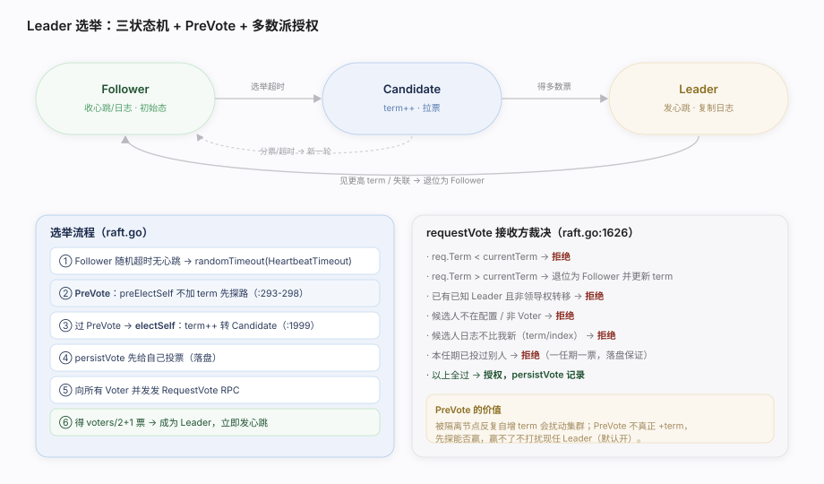
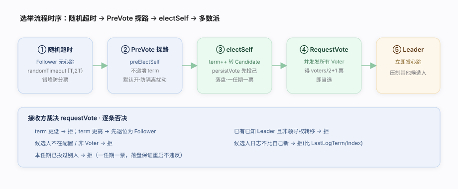
Follower 随机超时无心跳 → Candidate（term++、拉票）→ 得多数派授权 → Leader。PreVote 防隔离节点扰动、单调任期 + “一任期一票”保证唯一性。核实基准：raft.go（run/runFollower/runCandidate、electSelf:1999、requestVote:1626）、state.go、config.go。electSelf 只遍历 Suffrage==Voter）。persistVote 先写 StableStore，宕机重启才不会一个任期投两票。appendEntries 里处理）。| 项 | 值/机制 | 源码 |
|---|---|---|
| 初始状态 | Follower | state.go:17 |
| HeartbeatTimeout | 默认 1000ms（follower 无心跳阈值） | config.go DefaultConfig |
| ElectionTimeout | 默认 1000ms（candidate 无进展阈值） | config.go DefaultConfig |
| 随机化 | randomTimeout 在 [T, 2T) 取值 | raft.go:164 |
| PreVote | 默认开，可 PreVoteDisabled 关 | config.go:236 |
| 投票持久化 | LastVoteTerm / LastVoteCand | raft.go:29-30 |
| 当选票数 | voters/2+1 | raft.go:1087 quorumSize |
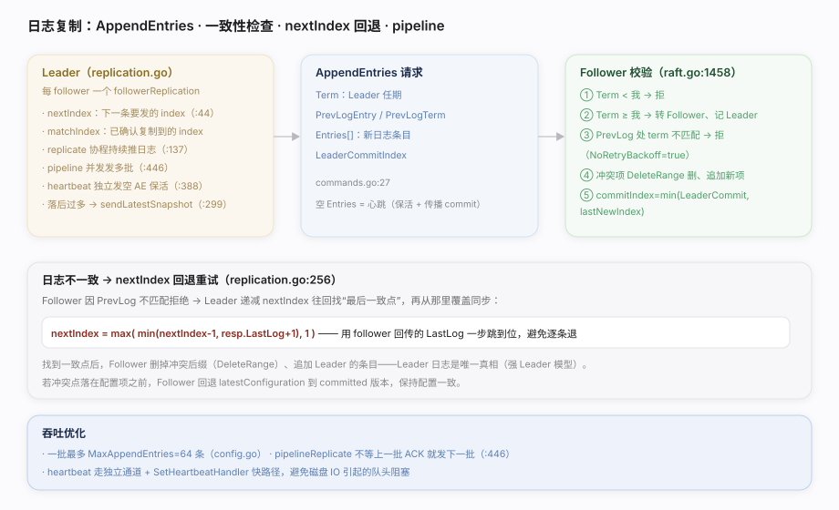
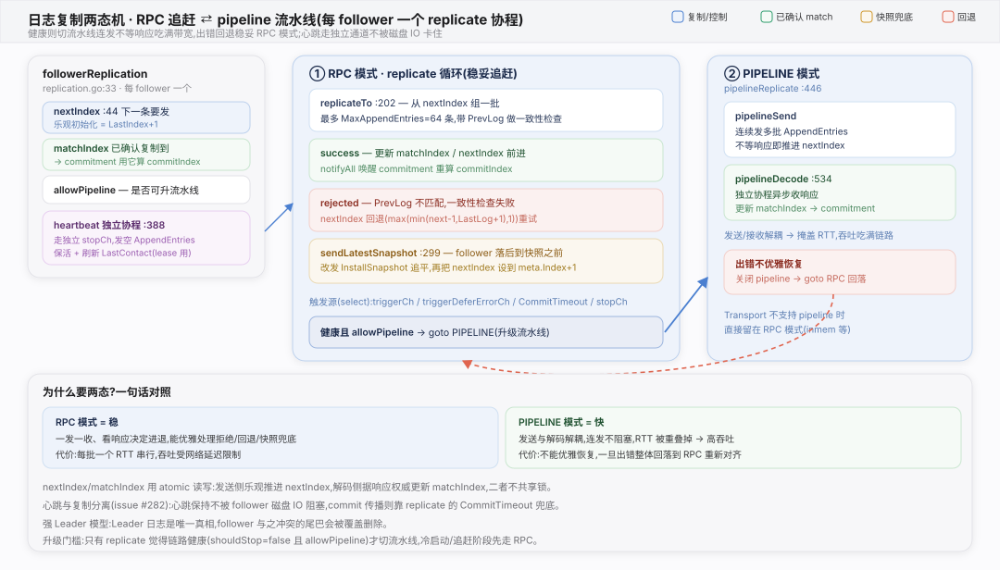
nextIndex/matchIndex，用 AppendEntries 携带 PrevLog 做一致性检查，不匹配就回退 nextIndex 重试；强 Leader 模型下 Leader 日志是唯一真相。核实基准：replication.go、raft.go（appendEntries:1458、dispatchLogs:1245）、commands.go。SetHeartbeatHandler 快路径避免被磁盘 IO 阻塞。SnapshotThreshold 控制日志规模。PrevLogTerm——同 index 不同 term 即冲突，必须覆盖。resp.LastLog 加速回退，不是每次只减 1。| 项 | 含义 | 源码 |
|---|---|---|
| nextIndex | 下一条要发给该 follower 的 index | replication.go:44 |
| matchIndex | 已确认复制到该 follower 的 index | commitment.go match |
| PrevLogEntry/Term | 一致性检查锚点 | commands.go:27 |
| MaxAppendEntries | 单批最多条数（默认 64） | config.go |
| pipelineReplicate | 不等 ACK 连发多批 | replication.go:446 |
| NoRetryBackoff | 日志不匹配时置位，触发快速回退 | raft.go:1458 |
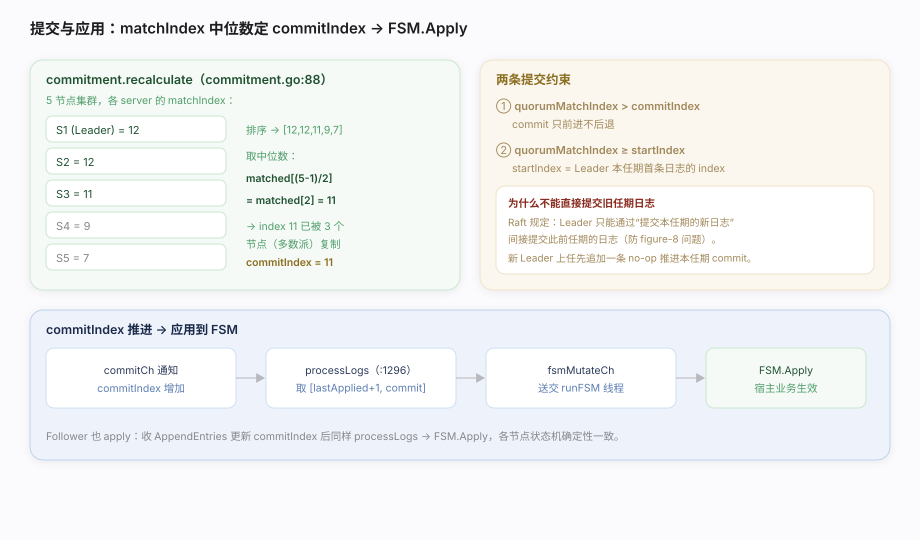
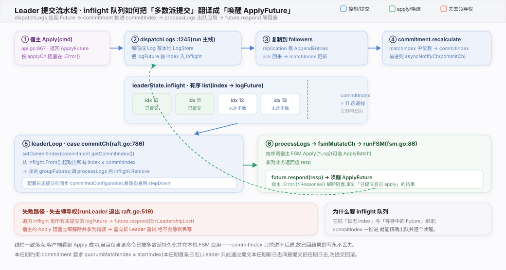
commitment 用各 server 的 matchIndex 中位数算出 commitIndex，processLogs 把 (lastApplied, commit] 区间的日志经 fsmMutateCh 交 runFSM 调 FSM.Apply。核实基准：commitment.go、raft.go（processLogs:1296、configurationChangeChIfStable:654）、fsm.go（runFSM:86）。ApplyBatch 一次拿一批已提交日志，降低 apply 次数。recalculate 有 > commitIndex 守卫。Response 才拿到结果。LogBarrier 不下发 FSM，仅用于“等此前写全部 apply”的栅栏。| 项 | 机制 | 源码 |
|---|---|---|
| 多数派 index | 排序 matchIndex 取中位数 | commitment.go:96 |
| commit 单调 | quorumMatchIndex > commitIndex 才更新 | commitment.go:100 |
| 本任期约束 | quorumMatchIndex ≥ startIndex | commitment.go:100 |
| 应用区间 | (lastApplied, commitIndex] | raft.go:1296 |
| 批量应用 | BatchingFSM.ApplyBatch 一次一批 | fsm.go:54 |
| 日志类型 | LogCommand→Apply, LogConfiguration→StoreConfiguration | fsm.go:runFSM |
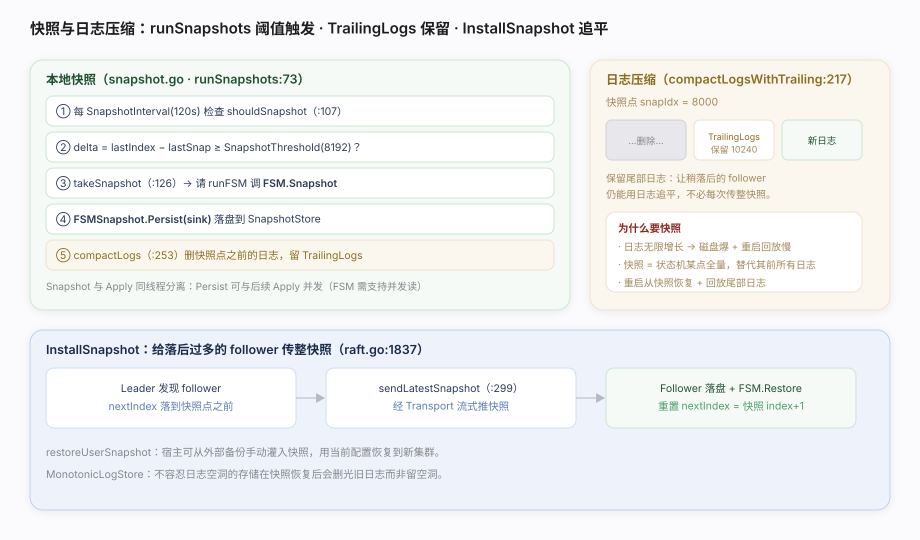
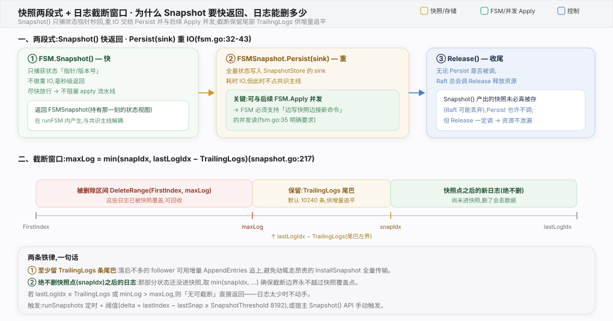
snapshot.go（runSnapshots:73、shouldSnapshot:107、takeSnapshot:126、compactLogs:253）、fsm.go（FSMSnapshot）、raft.go（installSnapshot:1837、replication sendLatestSnapshot:299）。Snapshot 那一瞬阻塞，Persist 与 Apply 并发——前提是 FSM 支持并发读。FSM.Restore 必须先丢弃全部旧状态再加载，否则脏数据。restoreUserSnapshot 路径。| 参数 | 默认 | 作用 | 源码 |
|---|---|---|---|
| SnapshotInterval | 120s | 检查是否需快照的周期 | config.go |
| SnapshotThreshold | 8192 | 距上次快照的日志增量阈值 | config.go |
| TrailingLogs | 10240 | 快照后保留的尾部日志条数 | config.go |
| FSM.Snapshot | — | 生成快照（应快速，捕获指针） | fsm.go:16 |
| FSMSnapshot.Persist | — | 重 IO 落盘，可与 Apply 并发 | fsm.go:74 |
| FSM.Restore | — | 从快照恢复，丢弃旧状态 | fsm.go:16 |
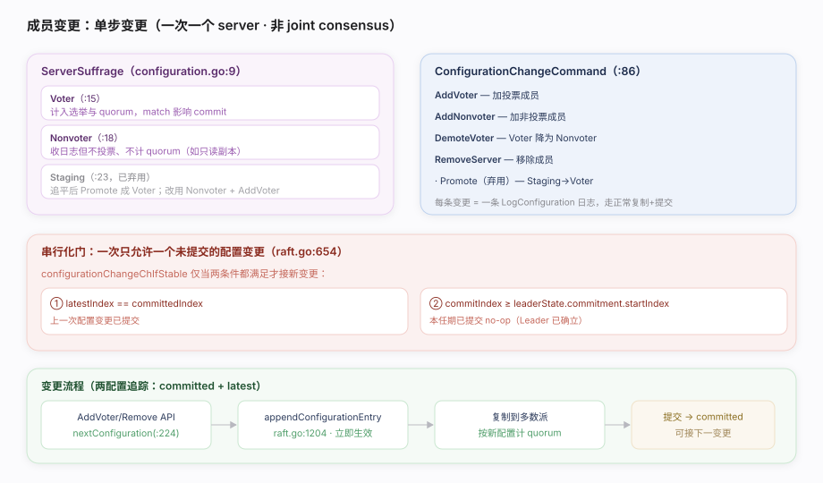
configuration.go（ServerSuffrage:9、ConfigurationChangeCommand:86、nextConfiguration:224）、raft.go（configurationChangeChIfStable:654、appendConfigurationEntry:1204）。AddVoter 提升，避免拉低可用性。AddVoter(id, addr, prevIndex, timeout) 传上次配置 index，防并发变更相互覆盖。quorumSize（raft.go:1087）。| 项 | 机制 | 源码 |
|---|---|---|
| 变更粒度 | 单 server（非 joint） | configuration.go:224 |
| 串行化条件① | 上次配置已提交 | raft.go:654 |
| 串行化条件② | 本任期已提交 no-op | raft.go:654 |
| 配置生效时机 | 追加即生效（不等提交） | raft.go:1204 |
| 两配置 | committed + latest | configuration.go |
| CAS 保护 | prevIndex 校验 | configuration.go:224 |
| 移除自己 | Leader 提交后退位 | leaderLoop stepDown |
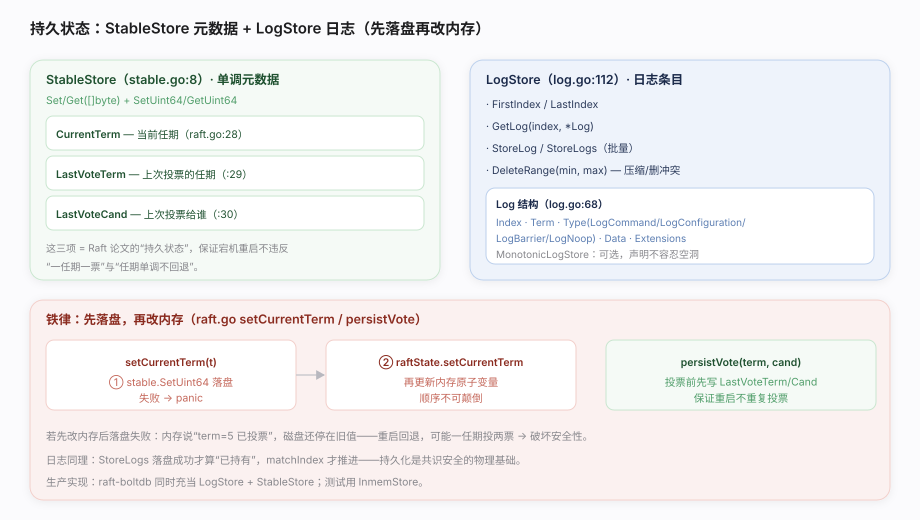
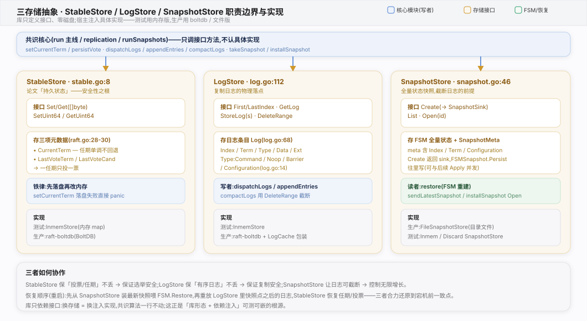
StableStore 存三项元数据（CurrentTerm/LastVoteTerm/LastVoteCand），LogStore 存日志条目；铁律是先落盘再改内存。核实基准：stable.go:8、log.go（LogStore:112、Log:68、LogType:14）、raft.go（keys:28-30、setCurrentTerm/persistVote）。raft-boltdb（可开 MonotonicLogStore）；追求性能可加 LogCache 包一层内存缓存。| 类别 | 存哪 | 内容 | 为何必须持久 |
|---|---|---|---|
| 任期 | StableStore | CurrentTerm | 任期不能回退，否则接受过期 Leader |
| 投票 | StableStore | LastVoteTerm / LastVoteCand | 一任期一票，防重启后重复投票 |
| 日志 | LogStore | Log[]（Index/Term/Type/Data） | 已复制日志重启不丢，matchIndex 可信 |
| 配置 | 日志 + 快照元数据 | LogConfiguration | 成员信息随日志/快照持久 |
| 快照点 | SnapshotStore | Index/Term/配置 | 恢复起点 |
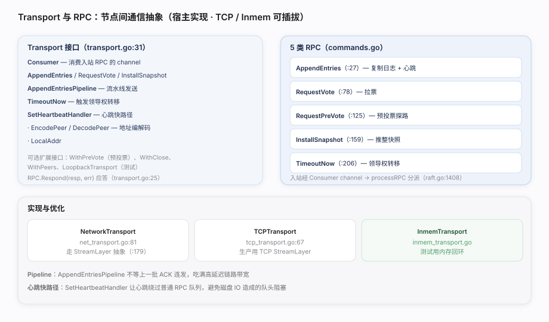
Transport 接口由宿主实现（生产用 TCP、测试用 Inmem）。它定义 5 类 RPC、pipeline 流水线与心跳快路径。核实基准：transport.go:31、commands.go、net_transport.go（NetworkTransport:81、StreamLayer:179）、tcp_transport.go:67、raft.go（processRPC:1408）。| RPC | 方向 | 用途 | 源码 |
|---|---|---|---|
| AppendEntries | Leader→Follower | 复制日志 / 心跳 | commands.go:27 |
| RequestVote | Candidate→Voter | 拉票 | commands.go:78 |
| RequestPreVote | Candidate→Voter | 预投票探路 | commands.go:125 |
| InstallSnapshot | Leader→Follower | 推整快照 | commands.go:159 |
| TimeoutNow | Leader→目标 | 领导权转移 | commands.go:206 |
| Pipeline | — | 连发不等 ACK | transport.go AppendEntriesPipeline |
| 心跳快路径 | — | 绕过 IO 队列 | transport.go SetHeartbeatHandler |
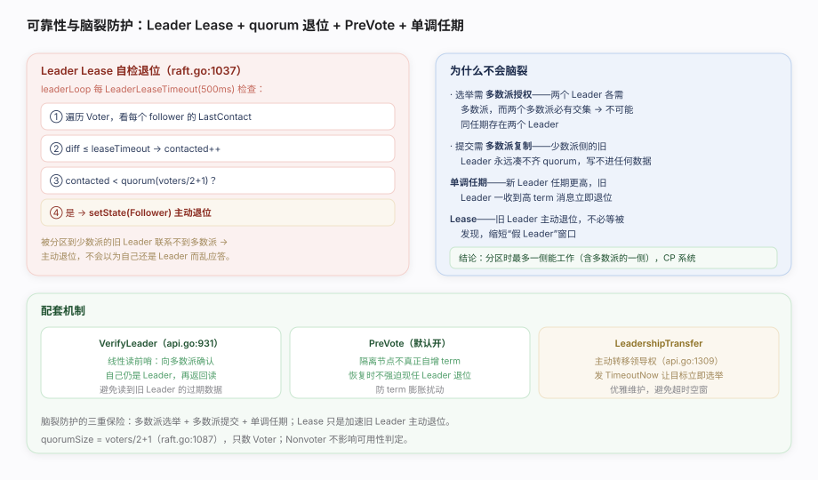
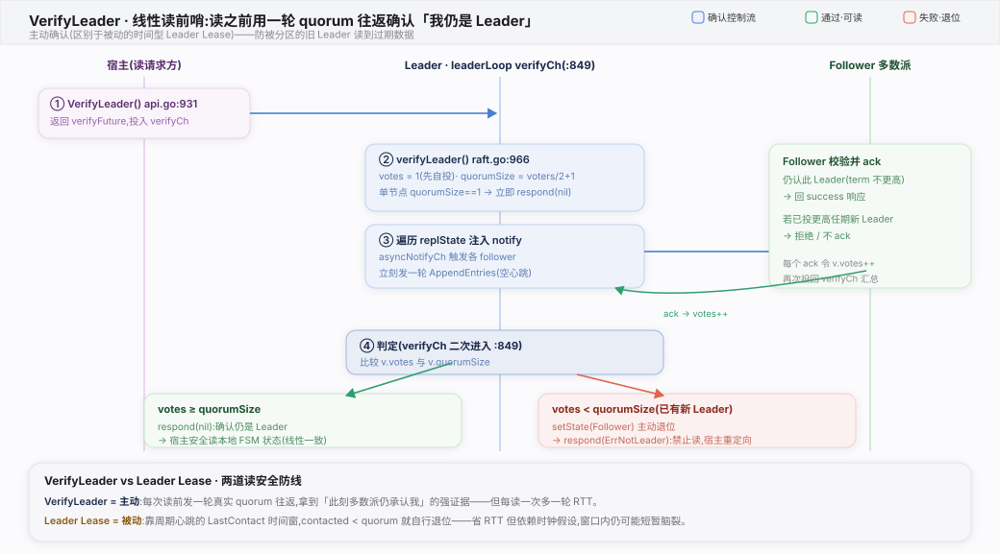
Leader Lease 让少数派侧的旧 Leader 主动退位、VerifyLeader 做线性读前哨、PreVote 防 term 膨胀、LeadershipTransfer 优雅交班。核实基准：raft.go（checkLeaderLease:1037、quorumSize:1087、leaderLoop:668）、api.go（VerifyLeader:931、LeadershipTransfer:1309）。| 机制 | 作用 | 源码 |
|---|---|---|
| Leader Lease | 联系不到 quorum 则主动退位 | raft.go:1037 |
| quorumSize | voters/2+1，只数 Voter | raft.go:1087 |
| 多数派选举 | 两多数派必交集 → 至多一 Leader | electSelf |
| 单调任期 | 见更高 term 立即退位 | appendEntries/requestVote |
| VerifyLeader | 线性读前哨 | api.go:931 |
| PreVote | 防隔离节点 term 膨胀 | config.go:236 |
| LeadershipTransfer | 优雅交班（TimeoutNow） | api.go:1309 |